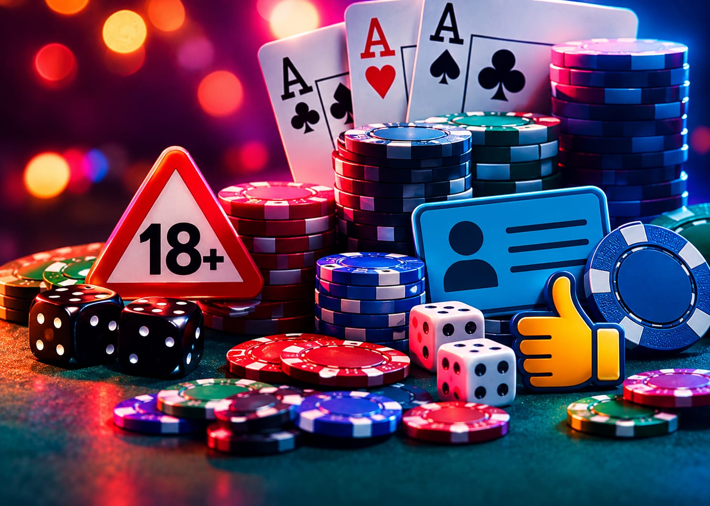
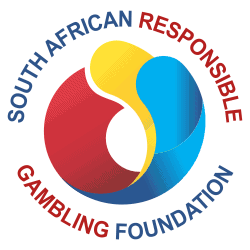
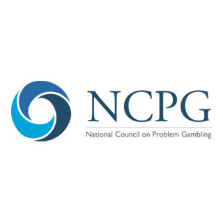

Responsible Gambling
Gambling should be entertainment, never a way to make money or escape stress. Know the signs, know your limits, and know where to get help.
Need to talk? Call our toll-free helpline on 0800 006 008, or learn the warning signs.

What is problem gambling?
Problem gambling is when gambling starts to harm other parts of your life: your health, your work or studies, your money or your relationships. It can affect anyone, and it often builds up slowly.
Why it matters
People who gamble excessively are more likely to experience low self-esteem, stress and depression, and some also develop problems with alcohol or drugs. The sooner someone gets support, the easier it is to turn things around.
Warning signs of problem gambling
Everyone's experience is different. The more of these you recognise in yourself or someone you know, the greater the chance of a problem.
- Gambling for long hours and losing track of time
- Chasing losses by betting more to win money back
- Borrowing money, or visiting ATMs and cheque-cashing services again and again
- Pulling away from family and friends
- Becoming irritable, aggressive or secretive
- Spending more and more time at gambling premises
Myths and facts
Myth
Some slot machines are "hot" and due for a big jackpot.
Fact
Every spin is random, decided by a random number generator (RNG). A machine is no more likely to pay out after a losing streak than after a win.
Myth
If I keep playing, I'll win my money back.
Fact
Every bet is independent, and the odds don't change because you have lost. Chasing losses usually means losing more.
Myth
Gambling is a good way to fix money problems.
Fact
Gambling is entertainment, and the odds always favour the house. Never gamble money you need for rent, food, school fees or bills.
Stay in control
- Set a budget before you start, and stick to it.
- Set a time limit and take regular breaks.
- Only gamble with money you can afford to lose.
- Never borrow money to gamble.
- Don't gamble to cope with stress, loneliness or sadness.
- Keep up the other things you enjoy in life.
Worried about your gambling, or someone else's?
The toll-free helpline is open 24 hours a day, 7 days a week. You don't have to wait until things feel serious.
0800 006 008Want to be barred from gambling venues? Self-exclusion is available. Contact the Board to find out how.
Our responsible gambling partners

